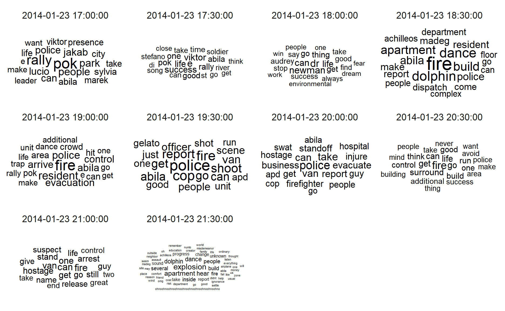
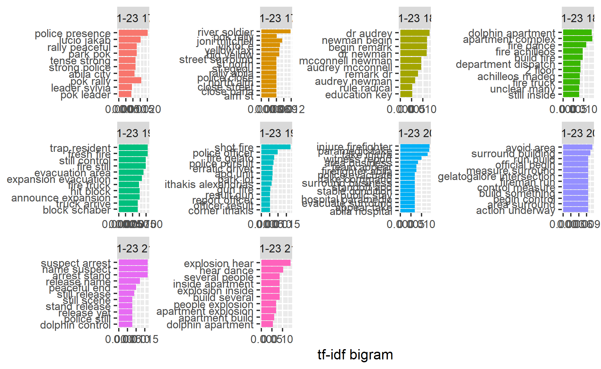
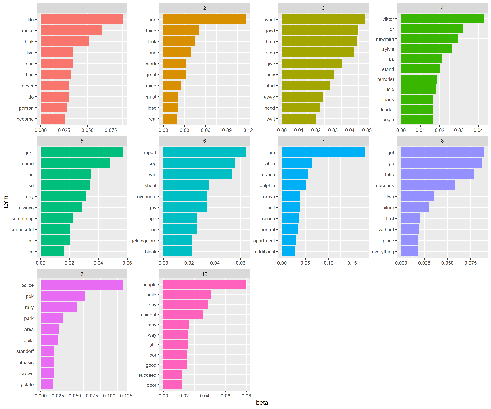
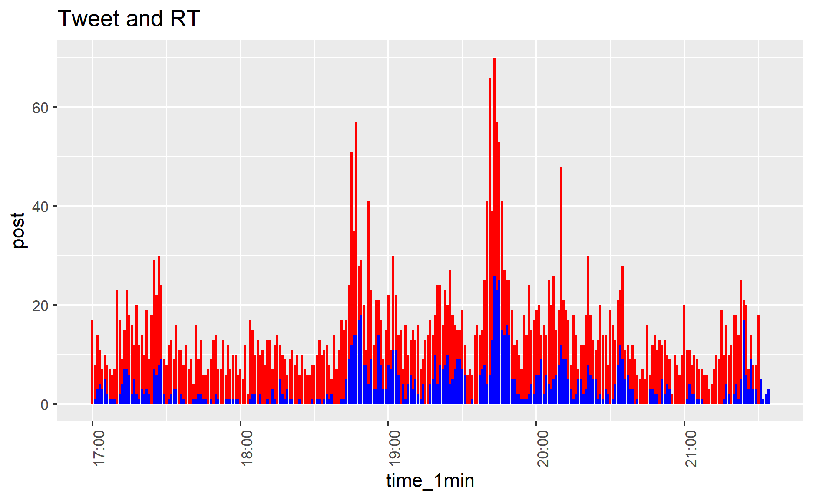
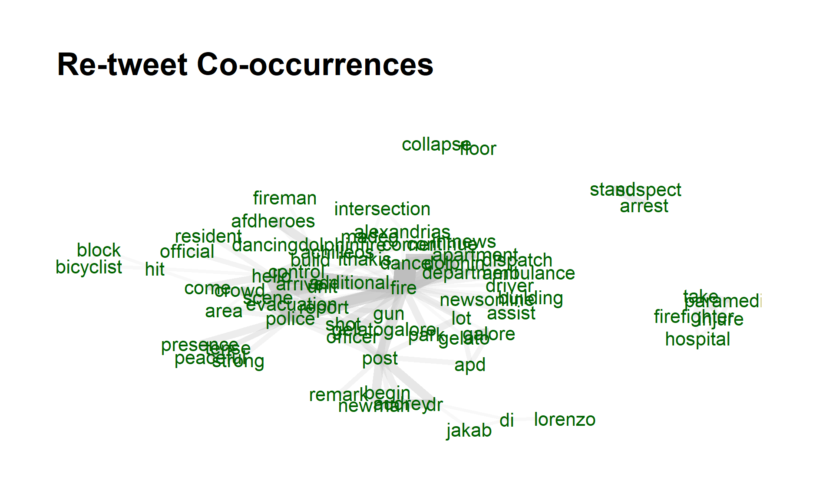

1.Introduction
In this report, I will use visual analytics techniques in R to solve questions from VAST Challenge 2021: Mini-Challenge 3. The main data set are 1)microblog records that have been identified by automated filters as being potentially relevant to the ongoing incident and 2)text transcripts of emergency dispatches by the Abila, Kronos local police and fire departments.
2.Literature Review
Detecting abnormal events ,such as disaster or crisis, from microblog social media has become a trend, as social media has played a pervasive role in the way people behave and think. Nowadays, people are also using time-stamped , geo -located data to share live information about what’s happening in their surroundings, which enables the public, government and researches to sense abnormal events in community more quickly and take immediate actions.
Spatiotemporal Abnormal Detection
The study from Junghoon et al. (2014) applied spatiotemporal visualization of microblog data to detect disaster and support decisions. The visualization they applied are shown as below,
 The number of Twitter users who posted Twitter messages containing one of the following keywords: hurricane, storm, and sandy is highly related to Hurricane Sandy (as shown in blue pins and blue lines of the center locations)
The number of Twitter users who posted Twitter messages containing one of the following keywords: hurricane, storm, and sandy is highly related to Hurricane Sandy (as shown in blue pins and blue lines of the center locations)
Then their study also analyzed spatial pattern of Twitter users after the tornado.
 (1)the heatmap shows a normal situation of Twitter user distribution in the same area of which the distribution is very different from the situation after the tornado event. As such, the spatial analytics can help with disaster management according to twitter heatmap distribution.
(1)the heatmap shows a normal situation of Twitter user distribution in the same area of which the distribution is very different from the situation after the tornado event. As such, the spatial analytics can help with disaster management according to twitter heatmap distribution.
Besides, the abnormality score are calculated with Latent Dirichlet Allocation (LDA) topic modeling and Seasonal-Trend Decomposition to detect severe weather condition.

Given the limitation of MC3 data set, we cannot visualize spatial heatmap, but we can try to leverage on LDA modeling and abnormality detection methodology to detect the crisis in Abila community.
Junk/Spam Detection
In Visual Analytics Benchmark Repository 2014, the submission from Tianjin University demonstrated a network approach in identifying junk tweet.
 They think “the size of the nodes represents the number of the blog being post. Notice that there are several nodes which have the larger size but no relationship with others which means theirs blogs are ignored by others.”. This is a very good intuition to visualize center and edges microblog user.
They think “the size of the nodes represents the number of the blog being post. Notice that there are several nodes which have the larger size but no relationship with others which means theirs blogs are ignored by others.”. This is a very good intuition to visualize center and edges microblog user.
However, if we can consider the correlation of text in two blogs would be better.
Textnets is a R package for automated text analysis using network techniques.It provides network for both text and text entities, which provides visualization ability to uncover correlation of texts in documents.

This visualization can be applied in the question 2 in answering the potential consequences of the situation and the number of people who could be affected via network graph.
3.Data Preprocessing and Exploratory
3.1 Import packages and social media stream data
packages= c('raster','sf','clock','tmap',
'tidyverse','data.table','lubridate',
'textclean','tm','wordcloud','wordcloud2','text2vec',
'topicmodels','tidytext','textmineR','quanteda',
'BTM','textplot','concaveman','ggwordcloud',
'qdapDictionaries','textstem','devtools','textnets',
'ggiraph','plotly','igraph', 'tidygraph',
'ggraph', 'visNetwork','udpipe')
for(p in packages){
if(!require(p,character.only= T)){
install.packages(p)
}
library(p, character.only = T)
}
#install.packages("devtools")
#install_github("cbail/textnets")
#read csv file
data_17_1830=read_csv("data/MC3/csv-1700-1830.csv")
data_1830_20=read_csv("data/MC3/csv-1831-2000.csv")
data_20_2130=read_csv("data/MC3/csv-2001-2131.csv")
#append 3 dataset
data=rbindlist(list(data_17_1830,data_1830_20,data_20_2130))
#print head of data
head(data)
type date(yyyyMMddHHmmss) author
1: mbdata 2.014012e+13 POK
2: mbdata 2.014012e+13 maha_Homeland
3: mbdata 2.014012e+13 Viktor-E
4: mbdata 2.014012e+13 KronosStar
5: mbdata 2.014012e+13 AbilaPost
6: mbdata 2.014012e+13 ourcountryourrights
message
1: Follow us @POK-Kronos
2: Don't miss a moment! Follow our live coverage of the POK Rally in the Park!
3: Come join us in the Park! Music tonight at Abila City Park!
4: POK rally to start in Abila City Park. POK leader Sylvia Marek to open with a speech.<U+0098> #KronosStar
5: POK rally set to take place in Abila City Park - POK leader Sylvia Marek has begun with opening remarks #AbilaPost
6: POK rally in the park tonight! #POKrally
latitude longitude location
1: NA NA <NA>
2: NA NA <NA>
3: NA NA <NA>
4: NA NA <NA>
5: NA NA <NA>
6: NA NA <NA>3.2 Change date type
#timestamp in lubridate
data$timestamp <- ymd_hms(data$`date(yyyyMMddHHmmss)`)
data$time_1min = cut(data$timestamp, breaks="1 min")
3.3 Text Data Preprocessing
rt <- "RT @([A-Za-z]+[A-Za-z0-9_-]+)(?![A-Za-z0-9_]*\\.)"
ppl <- "@([A-Za-z]+[A-Za-z0-9_-]+)(?![A-Za-z0-9_]*\\.)"
hash <- "#([A-Za-z]+[A-Za-z0-9_]+)(?![A-Za-z0-9_]*\\.)"
data$cleaned<-data$message %>%
str_replace_all(rt,"")%>%
str_replace_all(ppl,"")%>%
str_replace_all(hash,"") %>%
tolower()%>% # transform all message to lower cases
replace_contraction()%>% #replace contractions with long form
replace_word_elongation()%>% #remove the same letter (case insensitive) appears 3 times consecutively
str_replace_all("[0-9]", "") %>% #removing numbers
str_replace_all("([,=!.?$+%-&])","")%>% #remove punctuations
#str_replace_all("rt|pokrally|kronosstar","")%>%
#|#hi|#pok|#pokrally|
# #abilapost|#kronosstar|#centralbulletin|@centralbulletin|@kronosstar|rally|aliba") #remove hashtag and rt
removeWords(stopwords("english"))%>%
str_squish()%>% #trim whitespace from a string
lemmatize_strings()#removes whitespace from start and end of string
head(subset(data,select=c("message","cleaned")))
message
1: Follow us @POK-Kronos
2: Don't miss a moment! Follow our live coverage of the POK Rally in the Park!
3: Come join us in the Park! Music tonight at Abila City Park!
4: POK rally to start in Abila City Park. POK leader Sylvia Marek to open with a speech.<U+0098> #KronosStar
5: POK rally set to take place in Abila City Park - POK leader Sylvia Marek has begun with opening remarks #AbilaPost
6: POK rally in the park tonight! #POKrally
cleaned
1: follow us
2: miss moment follow live coverage pok rally park
3: come join us park music tonight abila city park
4: pok rally start abila city park pok leader sylvia marek open speech<U+FFFD>
5: pok rally set take place abila city park - pok leader sylvia marek begin open remark
6: pok rally park tonightdata%>% filter(data$cleaned=="")
type date(yyyyMMddHHmmss) author
1: mbdata 2.014012e+13 truccotrucco
2: mbdata 2.014012e+13 OnlytheTruth
3: mbdata 2.014012e+13 AbilaFireDept
4: mbdata 2.014012e+13 phantomagate
5: mbdata 2.014012e+13 redisrad
6: mbdata 2.014012e+13 redisrad
7: mbdata 2.014012e+13 martaO
8: mbdata 2.014012e+13 redisrad
9: mbdata 2.014012e+13 GreyCatCollectibles
10: mbdata 2.014012e+13 prettyRain
11: mbdata 2.014012e+13 redisrad
12: mbdata 2.014012e+13 AbilaAllFaith
13: mbdata 2.014012e+13 phantomagate
14: mbdata 2.014012e+13 teresaJ
15: mbdata 2.014012e+13 redisrad
16: mbdata 2.014012e+13 dolls4sale
message latitude
1: #RememberJuliana #RememberElian #VivaSylvia 36.052
2: Nooo don't #putitout NA
3: ? NA
4: RT @AbilaFireDept ? NA
5: #ominousknock NA
6: #yessir NA
7: #wheezy #panickattak #worstfirstdateever NA
8: #butwhere2 NA
9: #sososad NA
10: it's over!!!! NA
11: #checkin #ouzerielian #comeondown NA
12: We are here for you in you #hourofneed NA
13: RT @redisrad #checkin #ouzerielian #comeondown NA
14: RT @AbilaAllFaith We are here for you in you #hourofneed NA
15: What was that? #boom NA
16: RT @redisrad What was that? #boom NA
longitude location timestamp time_1min
1: 24.852 <NA> 2014-01-23 17:33:00 2014-01-23 17:33:00
2: NA <NA> 2014-01-23 18:47:09 2014-01-23 18:47:00
3: NA <NA> 2014-01-23 18:50:21 2014-01-23 18:50:00
4: NA <NA> 2014-01-23 18:53:21 2014-01-23 18:53:00
5: NA <NA> 2014-01-23 19:39:07 2014-01-23 19:39:00
6: NA <NA> 2014-01-23 19:40:00 2014-01-23 19:40:00
7: NA <NA> 2014-01-23 19:40:00 2014-01-23 19:40:00
8: NA <NA> 2014-01-23 19:45:00 2014-01-23 19:45:00
9: NA <NA> 2014-01-23 19:47:00 2014-01-23 19:47:00
10: NA <NA> 2014-01-23 21:20:50 2014-01-23 21:20:00
11: NA <NA> 2014-01-23 21:27:12 2014-01-23 21:27:00
12: NA <NA> 2014-01-23 21:27:12 2014-01-23 21:27:00
13: NA <NA> 2014-01-23 21:28:12 2014-01-23 21:28:00
14: NA <NA> 2014-01-23 21:29:12 2014-01-23 21:29:00
15: NA <NA> 2014-01-23 21:30:00 2014-01-23 21:30:00
16: NA <NA> 2014-01-23 21:34:00 2014-01-23 21:34:00
cleaned
1:
2:
3:
4:
5:
6:
7:
8:
9:
10:
11:
12:
13:
14:
15:
16: regex <- "RT @([A-Za-z]+[A-Za-z0-9_-]+)(?![A-Za-z0-9_]*\\.)"
regex2 <- "@([A-Za-z]+[A-Za-z0-9_-]+)(?![A-Za-z0-9_]*\\.)"
regex3 <- "RT @([A-Za-z]+[A-Za-z0-9_-]+)(?![A-Za-z0-9_]*\\.) "
regex4 <- "#([A-Za-z]+[A-Za-z0-9_]+)(?![A-Za-z0-9_]*\\.)"
data$RT_pattern<-str_extract_all(data$message, regex, simplify = TRUE)
data$RT_from<- str_extract_all(data$RT_pattern, regex2, simplify = TRUE)
data$RT_from<- str_replace(data$RT_from, "@","")
data$RT_message <- str_replace_all(data$message,regex3,"")
data$hashtag <- str_extract_all(data$message, regex2, simplify = FALSE)
data$user_mentioned <- str_extract_all(data$message, regex4, simplify = FALSE)
data_RT<- data %>%
filter(RT_from!="")
head(data)
type date(yyyyMMddHHmmss) author
1: mbdata 2.014012e+13 POK
2: mbdata 2.014012e+13 maha_Homeland
3: mbdata 2.014012e+13 Viktor-E
4: mbdata 2.014012e+13 KronosStar
5: mbdata 2.014012e+13 AbilaPost
6: mbdata 2.014012e+13 ourcountryourrights
message
1: Follow us @POK-Kronos
2: Don't miss a moment! Follow our live coverage of the POK Rally in the Park!
3: Come join us in the Park! Music tonight at Abila City Park!
4: POK rally to start in Abila City Park. POK leader Sylvia Marek to open with a speech.<U+0098> #KronosStar
5: POK rally set to take place in Abila City Park - POK leader Sylvia Marek has begun with opening remarks #AbilaPost
6: POK rally in the park tonight! #POKrally
latitude longitude location timestamp
1: NA NA <NA> 2014-01-23 17:00:00
2: NA NA <NA> 2014-01-23 17:00:00
3: NA NA <NA> 2014-01-23 17:00:00
4: NA NA <NA> 2014-01-23 17:00:00
5: NA NA <NA> 2014-01-23 17:00:00
6: NA NA <NA> 2014-01-23 17:00:00
time_1min
1: 2014-01-23 17:00:00
2: 2014-01-23 17:00:00
3: 2014-01-23 17:00:00
4: 2014-01-23 17:00:00
5: 2014-01-23 17:00:00
6: 2014-01-23 17:00:00
cleaned
1: follow us
2: miss moment follow live coverage pok rally park
3: come join us park music tonight abila city park
4: pok rally start abila city park pok leader sylvia marek open speech<U+FFFD>
5: pok rally set take place abila city park - pok leader sylvia marek begin open remark
6: pok rally park tonight
RT_pattern RT_from
1:
2:
3:
4:
5:
6:
RT_message
1: Follow us @POK-Kronos
2: Don't miss a moment! Follow our live coverage of the POK Rally in the Park!
3: Come join us in the Park! Music tonight at Abila City Park!
4: POK rally to start in Abila City Park. POK leader Sylvia Marek to open with a speech.<U+FFFD> #KronosStar
5: POK rally set to take place in Abila City Park - POK leader Sylvia Marek has begun with opening remarks #AbilaPost
6: POK rally in the park tonight! #POKrally
hashtag user_mentioned
1: @POK-Kronos
2:
3:
4: #KronosStar
5: #AbilaPost
6: #POKrally#convert dataframe to corpus
docs <- Corpus(VectorSource(as.character(data$cleaned)))
inspect(docs[1:2])
<<SimpleCorpus>>
Metadata: corpus specific: 1, document level (indexed): 0
Content: documents: 2
[1] follow us
[2] miss moment follow live coverage pok rally park# Create a document-term-matrix
dtm <- TermDocumentMatrix(docs)
matrix <- as.matrix(dtm)
words <- sort(rowSums(matrix),decreasing=TRUE)
# words and frequency dataframe
df <- data.frame(word = names(words),freq=words)
#word cloud
wordcloud(words = df$word, freq = df$freq, min.freq = 5, max.words=200, random.order=FALSE, rot.per=0.35, colors=brewer.pal(8, "Dark2"))
#wordcloud2(data=df, size=1.6, color='random-dark')
words_count<-data_subset%>%
unnest_tokens(word, cleaned) %>%
count(time_30min,word, sort = TRUE)
4.Data Visualization for Challenge Questions
4.1 Using visual analytics, characterize the different types of content in the dataset. What distinguishes meaningful event reports from typical chatter from junk or spam? Please limit your answer to 8 images and 500 words.
First the data is split by 30 minutes time interval and perform wordcloud, to visualize the most frequent words in the microblog.
data$timestamp <- ymd_hms(data$`date(yyyyMMddHHmmss)`)
data$time_30min = cut(data$timestamp, breaks="30 min")
data$id <- seq.int(nrow(data))
data_subset=subset(data,select=c("time_30min","cleaned"))
usenet_words<-data_subset%>%
group_by(time_30min) %>%
unnest_tokens(word, cleaned) %>%
count(time_30min,word, sort = TRUE)
usenet_words[order(usenet_words$time_30min),]
# A tibble: 6,975 x 3
# Groups: time_30min [10]
time_30min word n
<fct> <chr> <int>
1 2014-01-23 17:00:00 pok 98
2 2014-01-23 17:00:00 rally 76
3 2014-01-23 17:00:00 people 44
4 2014-01-23 17:00:00 park 40
5 2014-01-23 17:00:00 jakab 37
6 2014-01-23 17:00:00 lucio 35
7 2014-01-23 17:00:00 police 35
8 2014-01-23 17:00:00 can 34
9 2014-01-23 17:00:00 abila 30
10 2014-01-23 17:00:00 sylvia 30
# ... with 6,965 more rowsset.seed(1234)
usenet_words %>%
group_by(time_30min) %>%
slice_max(order_by = n, n = 20) %>%
ggplot(aes(label = word,
size = n)) +
geom_text_wordcloud() +
theme_minimal() +
facet_wrap(~time_30min)

From the visualization, we can tell the main content discussing in the community are
1700-1830 pok rally in park with several name mentioned such as cylvia, jakab, viktor 1830-1930 fire at dancing dolphin partment, police and evacuation. 1930-2000 shooting and cops/police 2100-2130 van/ hostage/ explosion
Then, by applying Term Frequency – Inverse document frequency (tf-idf) to bigram texts, we can uncover more information compared with unigrams.
bigrams <- data_subset%>%
group_by(time_30min)%>%
unnest_tokens(word,
cleaned,
token = "ngrams",
n = 2) %>%
count(time_30min,word, sort = TRUE)
tf_idf <- bigrams%>%
bind_tf_idf(word,time_30min, n) %>%
arrange(desc(tf_idf))
tf_idf %>%
group_by(time_30min) %>%
slice_max(tf_idf,
n = 10) %>%
ungroup() %>%
mutate(word = reorder(word,
tf_idf)) %>%
ggplot(aes(tf_idf,
word,
fill = time_30min)) +
geom_col(show.legend = FALSE) +
facet_wrap(~ time_30min,
scales = "free") +
labs(x = "tf-idf bigram",
y = NULL)

Without having to process more on data, the contents of the microblogs with 30 mins time interval is even more informative. For instance, from 1700-1800, we know that police presense at pok rally and Dr. Audrey is mentioned several times from 1800. Then from 1830 , fire occurs at dolphin apartment and followed by evacuation. Then, from 1930, a shot/gun fire happened with police involved, followed by injured firefighter and hospitalization. And from 2100 suspects were arrested and followed by an explosion at dolphin apartment from 2130 onward.
Then, to distinguish meaningful events from chatter/junk/spam messages, I will then perform topic modeling to identify topic in each microblogs.
wordcorpus <- Corpus(VectorSource(as.character(data$cleaned)))
dtm <- DocumentTermMatrix(wordcorpus,
control = list(
wordLengths=c(2, Inf), # limit word length
bounds = list(global = c(5,Inf)), # minimum word frequency
removeNumbers = TRUE, #remove Numbers
weighting = weightTf, #weighted term frequency
encoding = "UTF-8"))
rowTotals <- apply(dtm , 1, sum) #Find the sum of words in each Document
dtm.new <- dtm[rowTotals> 0, ] #remove 0 dtm rows of matrix
topic=LDA(dtm.new,k=10,method="Gibbs",conrol=list(seed=2021,alpha=0.01,iter=200))
Top five words in each topics
terms(topic,5)
Topic 1 Topic 2 Topic 3 Topic 4 Topic 5 Topic 6
[1,] "go" "can" "fire" "life" "van" "think"
[2,] "get" "people" "dance" "thing" "just" "want"
[3,] "viktor" "one" "dolphin" "find" "cop" "never"
[4,] "dr" "say" "build" "live" "run" "work"
[5,] "newman" "successful" "unit" "great" "shoot" "look"
Topic 7 Topic 8 Topic 9 Topic 10
[1,] "police" "good" "pok" "take"
[2,] "scene" "time" "abila" "make"
[3,] "evacuate" "stop" "rally" "success"
[4,] "hostage" "give" "park" "two"
[5,] "area" "start" "sylvia" "failure"Extract per-topic-per-word probabilities ,β(“beta”), from the model. The higher the value, the more important of the words to the topic.
ap_topics <- tidy(topic, matrix = "beta")
ap_top_terms <- ap_topics %>%
group_by(topic) %>%
slice_max(beta, n = 10) %>%
ungroup() %>%
arrange(topic, -beta)
ap_top_terms %>%
mutate(term = reorder_within(term, beta, topic)) %>%
ggplot(aes(beta, term, fill = factor(topic))) +
geom_col(show.legend = FALSE) +
facet_wrap(~ topic, scales = "free") +
scale_y_reordered()

As shown above, the meaningful keywords can be found in each topic.
Topic 1 - police related as words mentioning police/standoff/crowd Topic 5 - several pok leaders are mentioned Topic 6 - resident evacuation and hostages Topic 9 - fire at dancing dolphin topic 10- van/ shoot/ guy
While other topics are more chatter/junk related.
By using gamma, we can then assign each document with a topictopic_gamma <- tidy(topic, matrix = "gamma")
topic_gamma <- topic_gamma %>%
group_by(document) %>%
slice(which.max(gamma))
topic_gamma$document<-as.numeric(topic_gamma$document)
topic_gamma[order(topic_gamma$document),] %>% group_by(topic) %>% count()
# A tibble: 10 x 2
# Groups: topic [10]
topic n
<int> <int>
1 1 662
2 2 500
3 3 528
4 4 460
5 5 439
6 6 354
7 7 294
8 8 290
9 9 229
10 10 264head(topic_gamma%>% arrange(desc(-document)))
# A tibble: 6 x 3
# Groups: document [6]
document topic gamma
<dbl> <int> <dbl>
1 1 4 0.115
2 2 4 0.140
3 3 9 0.186
4 4 9 0.258
5 5 9 0.292
6 6 9 0.148id_time <- data %>% select(c("id","time_1min"))
topic_data<-left_join(topic_gamma,id_time,by=c("document"="id"))
#manually put topics in LDA results
topic_c<- c(1,2,3,4,5,6,7,8,9,10)
topics_c <- c("police related","chatter1","chatter2","chatter3","POK leaders",
"evacuation & hostages","chatter4","junk","fire","van")
topic_df<-data.frame(topic_c,topics_c )
topic_data<-left_join(topic_data,topic_df,by=c("topic"="topic_c"))
topic_data %>% group_by(time_1min,topics_c) %>% count() %>%
ggplot(aes(x=time_1min))+
geom_bar(aes(y=n), stat = "identity",fill = "black")+
facet_wrap(~topics_c)+
ggtitle("Topics Trend")

unique(topic_data$topics_c)
[1] "chatter3" "fire"
[3] "junk" "police related"
[5] "chatter1" "van"
[7] "POK leaders" "evacuation & hostages"
[9] "chatter2" "chatter4" #Tokenize data
tidytxtdata<- tidy(dtm)
tidytxtdata <- tidytxtdata%>% #Remove the count column
select(-count)
tidytxtdata <- tidytxtdata%>% #Change the column name 'term' to 'word' so that we can get rid of stopwords later
rename(word = term)
#Remove stopwords
tidytxtdata <- tidytxtdata%>%
anti_join(stop_words)
#Use the btm model
set.seed(321)
model <- BTM(tidytxtdata, k = 20, beta = 0.01, background = TRUE, iter = 500, trace = 100) #Run the model
2021-07-14 00:25:44 Start Gibbs sampling iteration 1/500
2021-07-14 00:25:45 Start Gibbs sampling iteration 101/500
2021-07-14 00:25:47 Start Gibbs sampling iteration 201/500
2021-07-14 00:25:48 Start Gibbs sampling iteration 301/500
2021-07-14 00:25:49 Start Gibbs sampling iteration 401/500topicterms <- terms(model, top_n = 10) #View the topics
#topicterms
To identify chatter/junk/spam from meaningful events. Firstly, let’s find out the relationship of number of tweets and retwewts of a single author.
tweet<-data %>%
filter(author!="NA") %>%
group_by(author) %>%
count()
retweet<-data %>%
group_by(RT_from) %>%
count()
colnames(tweet)[2]<-"tweet"
colnames(retweet)[2]<-"retweet"
tweet_retweet<-left_join(tweet, retweet, by = c("author"="RT_from"))%>%
mutate_each(funs(replace(., which(is.na(.)), 0))) %>%
arrange(desc(tweet,retweet))
tweet_retweet$ratio<- tweet_retweet$retweet/tweet_retweet$tweet
head(tweet_retweet %>% arrange(ratio))
# A tibble: 6 x 4
# Groups: author [6]
author tweet retweet ratio
<chr> <dbl> <dbl> <dbl>
1 KronosQuoth 1265 0 0
2 Clevvah4Evah 153 0 0
3 BlueVelvet 37 0 0
4 brain448 35 0 0
5 sarajane 33 0 0
6 dtennent 32 0 0# p=ggplot(tweet_retweet , aes(x=tweet, y=retweet)) +
# geom_point()+
# geom_abline(coef = c(0,1))+
# geom_text(data = filter(tweet_retweet, tweet>=40|retweet>=40),aes(label=author))
#
# ggplotly(p)
plot_ly(data=tweet_retweet %>% filter(author!="KronosQuoth"), #exclude @Kronosquoth for aesthetic purpose
x=~tweet,
y=~retweet,
text= ~author)
From the chart above, we can notice that user with number of tweets does not have any retweets, such as @Clevvah4Evah, @KronosQuoth. On the other hand, authors with high re tweet frequency are HomelandIlluminations, @AbilaPost, @KronosStar, @CentralBulletin , @NewsOnlineToday , and @InternationalNews, of which the post were more meaningful information to the public.
#net_edge<-data %>% select(c('RT_from','author')) %>% arrange(desc(RT_from)) %>% filter(RT_from!="")
#net_node<-tweet_retweet%>% select(c('author','retweet'))%>% filter(retweet>0)
#4.2 Use visual analytics to represent and evaluate how the level of the risk to the public evolves over the course of the evening. Consider the potential consequences of the situation and the number of people who could be affected. Please limit your answer to 10 images and 1000 words.
##Number of posts
count <- data %>%
group_by(type,time_1min) %>%
summarise(count_of_posts= n_distinct(message))
count$time_1min=ymd_hms(count$time_1min)
#count$time_1min=format(count$time_1min,format = "%H:%M:%S")
mean=mean(count$count_of_posts)
ggplot(count,aes(x=time_1min,y=count_of_posts,fill=type))+
geom_bar(stat="identity",position="dodge")+
# geom_abline(h=mean, col = "black")+
theme(axis.text.x = element_text(angle = 90, hjust = 1))+
ggtitle("Total Number of Posts through the period")
# A tibble: 10 x 3
# Groups: type [1]
type time_1min count_of_posts
<chr> <dttm> <int>
1 mbdata 2014-01-23 19:43:00 61
2 mbdata 2014-01-23 19:41:00 60
3 mbdata 2014-01-23 19:44:00 48
4 mbdata 2014-01-23 19:45:00 48
5 mbdata 2014-01-23 18:47:00 47
6 mbdata 2014-01-23 18:45:00 44
7 mbdata 2014-01-23 18:52:00 38
8 mbdata 2014-01-23 19:40:00 38
9 mbdata 2014-01-23 20:10:00 38
10 mbdata 2014-01-23 19:46:00 33With time interval at 1 minute, the number of posts trend is plotted as above. The peaks of both ccdata and mbdata are observed during time 19:40-19:50, 18:45:00 and 20:10:00.
##Number of retweets/tweets
data_rt2<-data %>%
#filter(str_detect(message, "fire")) %>%
select(c("author","time_1min","message","RT_from")) %>%
group_by(time_1min) %>%
summarise(post=n(),
rt_post=sum(RT_from!=""))
data_rt2$time_1min=ymd_hms(data_rt2$time_1min)
#ggplot(fire,aes(x=time_1min,y=n))+
#geom_bar(stat="identity",position="dodge")+
#theme(axis.text.x = element_text(angle = 90, hjust = 1))+
#ggtitle("Total Number of Posts through the period")
ggplot(data_rt2,aes(x=time_1min)) +
geom_bar(aes(y=post), stat = "identity",fill = "red") +
geom_bar(aes(y=rt_post), stat = "identity",fill = "blue") +
theme(axis.text.x = element_text(angle = 90, hjust = 1))+
ggtitle("Tweet and RT")

Another way to detect the active level of microblog is to visualize the proportion of re-tweet/tweet. As shown in the bar graph above, the peak trend coincides with “Total Number of Posts through the period”, indicating the people are actively eveloved in the events happening in Abila.
The goverment can monitor the ratio of retweet in community to detect abnormal event.
##Important news source - Mainstream media/ ccdata /KOL
Noticed that the mainstream media (with name starting with capital letter and frequently re-tweet by public) and call center are actively quoted media for Abila.
# check if the media is mainstream media
data_RT %>%
filter(RT_from!=author) %>%
count(RT_from) %>%
arrange(desc(n)) %>%
filter(n>40) # filter the retweet over 10 times by public
RT_from n
1: HomelandIlluminations 183
2: AbilaPost 169
3: KronosStar 143
4: CentralBulletin 78
5: NewsOnlineToday 44
6: InternationalNews 43@HomelandIlluminations/@AbilaPost/@KronosStar/@CentralBulletin/@NewsOnlineToday/@InternationalNews are top6 social media in area of Abila. Their tweet should be closely monitored by local authorities, in particular, when the frequency of re-tweet from the public has raised.
For instance, to understand people’s attehntion of the abnormal events, we can monitor the words and its relationships in main stream media’s re-tweets.
#convert dataframe to corpus
data_RT_main<-data %>%
filter(RT_from==c("HomelandIlluminations","AbilaPost",
"KronosStar","CentralBulletin",
"NewsOnlineToday","InternationalNews"))
data_RT_main$id <- seq.int(nrow(data_RT_main))
data_RT_subset<-data_RT_main %>% select(c("id","RT_message"))
data_RT_subset$RT_message_cleaned<-
tolower(data_RT_subset$RT_message)%>% # transform all message to lower cases
replace_contraction()%>% #replace contractions with long form
replace_word_elongation()%>%
str_replace_all("[0-9]", "") %>% #removing numbers
str_replace_all("([,=!.?$+%-&#@])","")%>% #remove punctuations
str_replace_all("abila|abilapost|centralbulletin|kronosstar|pok|rally","")%>%
removeWords(stopwords("english"))%>%
str_squish()%>%
str_trim %>%
lemmatize_strings()
x<-data_RT_subset %>%
unnest_tokens(word, RT_message_cleaned)
x<-cooccurrence(x, group = "id", term = "word")
plt <- textplot_cooccurrence(x,
title = "Re-tweet Co-occurrences", top_n = 150)
plt

In the retweet from the main media, high occurrence of fire at dolphine apartement has the most co-occurance of retweets in the community, indicating highest attention and highest risk in the community, followed by several events involved with police such as post of pokrally/ arrive at scene. While in the edge of the plot , we can found that the public was also interested in retweet firefighter injure at hospital/ suspect arrest.
tf-idf from call center
data %>% filter(author=="FriendsOfKronos")
type date(yyyyMMddHHmmss) author
1: mbdata 2.014012e+13 FriendsOfKronos
2: mbdata 2.014012e+13 FriendsOfKronos
3: mbdata 2.014012e+13 FriendsOfKronos
4: mbdata 2.014012e+13 FriendsOfKronos
5: mbdata 2.014012e+13 FriendsOfKronos
6: mbdata 2.014012e+13 FriendsOfKronos
7: mbdata 2.014012e+13 FriendsOfKronos
8: mbdata 2.014012e+13 FriendsOfKronos
9: mbdata 2.014012e+13 FriendsOfKronos
10: mbdata 2.014012e+13 FriendsOfKronos
11: mbdata 2.014012e+13 FriendsOfKronos
12: mbdata 2.014012e+13 FriendsOfKronos
13: mbdata 2.014012e+13 FriendsOfKronos
14: mbdata 2.014012e+13 FriendsOfKronos
15: mbdata 2.014012e+13 FriendsOfKronos
16: mbdata 2.014012e+13 FriendsOfKronos
17: mbdata 2.014012e+13 FriendsOfKronos
18: mbdata 2.014012e+13 FriendsOfKronos
19: mbdata 2.014012e+13 FriendsOfKronos
20: mbdata 2.014012e+13 FriendsOfKronos
21: mbdata 2.014012e+13 FriendsOfKronos
22: mbdata 2.014012e+13 FriendsOfKronos
23: mbdata 2.014012e+13 FriendsOfKronos
24: mbdata 2.014012e+13 FriendsOfKronos
25: mbdata 2.014012e+13 FriendsOfKronos
26: mbdata 2.014012e+13 FriendsOfKronos
27: mbdata 2.014012e+13 FriendsOfKronos
28: mbdata 2.014012e+13 FriendsOfKronos
29: mbdata 2.014012e+13 FriendsOfKronos
30: mbdata 2.014012e+13 FriendsOfKronos
31: mbdata 2.014012e+13 FriendsOfKronos
32: mbdata 2.014012e+13 FriendsOfKronos
33: mbdata 2.014012e+13 FriendsOfKronos
34: mbdata 2.014012e+13 FriendsOfKronos
35: mbdata 2.014012e+13 FriendsOfKronos
36: mbdata 2.014012e+13 FriendsOfKronos
37: mbdata 2.014012e+13 FriendsOfKronos
38: mbdata 2.014012e+13 FriendsOfKronos
39: mbdata 2.014012e+13 FriendsOfKronos
40: mbdata 2.014012e+13 FriendsOfKronos
41: mbdata 2.014012e+13 FriendsOfKronos
42: mbdata 2.014012e+13 FriendsOfKronos
43: mbdata 2.014012e+13 FriendsOfKronos
44: mbdata 2.014012e+13 FriendsOfKronos
45: mbdata 2.014012e+13 FriendsOfKronos
46: mbdata 2.014012e+13 FriendsOfKronos
47: mbdata 2.014012e+13 FriendsOfKronos
48: mbdata 2.014012e+13 FriendsOfKronos
49: mbdata 2.014012e+13 FriendsOfKronos
50: mbdata 2.014012e+13 FriendsOfKronos
51: mbdata 2.014012e+13 FriendsOfKronos
52: mbdata 2.014012e+13 FriendsOfKronos
53: mbdata 2.014012e+13 FriendsOfKronos
54: mbdata 2.014012e+13 FriendsOfKronos
55: mbdata 2.014012e+13 FriendsOfKronos
56: mbdata 2.014012e+13 FriendsOfKronos
57: mbdata 2.014012e+13 FriendsOfKronos
58: mbdata 2.014012e+13 FriendsOfKronos
59: mbdata 2.014012e+13 FriendsOfKronos
60: mbdata 2.014012e+13 FriendsOfKronos
61: mbdata 2.014012e+13 FriendsOfKronos
62: mbdata 2.014012e+13 FriendsOfKronos
63: mbdata 2.014012e+13 FriendsOfKronos
type date(yyyyMMddHHmmss) author
message
1: massive rally of POK terrorists - cops are gathered waiting for arrests
2: how long until POK terrorists start destroying the park
3: terrorist leader Sylvia Marek tring to greenwash her terror group #POK
4: another POK riot waiting to happend
5: what legitimate speaker would ally themself with POK
6: Prof Di Stefano should lose his job #POK #terrorsympathizer
7: stupd cops i have lost faith in #APD just arrest all these terrorists and figure it out later
8: Lucio Jakab & Save OUr Wetlands terrorist sympathesizers #POK
9: Abila POst says POK rally peaceful tell that to the people they kidnapped #POK #terror
10: 1200 terrorists in Abila City Park and the police does nothing #POK #terrorists
11: what is Abila police doing? waiting for the POK terrorists to kidnap murder more people? #POK #terror
12: #APD has closed surrounding streets of POK rally is it crackdown time? hope so
13: boycott Viktor-E! boycott Viktor-E! terrorist supporters are terrorists #POK
14: figured it out: POK are hippy terrorists
15: POK teror destroys Joni Mitchell song - never think of it the same
16: Prof Distefano should be stripped of his degrees and deported #POK #terror
17: what we need to demand Proffessor is that people like you stop aiding terrorists #POK
18: listen to Dr Newman totally discredit herself to the rest of the world good carreer move doc #POK #terror
19: whos the enemy doc? the people of kronos? the kidnapped victims of POK terrror? ridiculous #POK
20: dr newman what a joke #POK #terror
21: thanks for ending your terrorist propaganda doc #POK #terror
22: #APD should be arresting everyone that has spoken today starting with Sylvia Marek #POK
23: #AbilaPOst are you joking? no violence? POK presence in the park is violence #POK
24: gunfire at gelatogalore give ya one guess: POK terrorists
25: what is Abila coming to? used to be a peaceful city before POK started their peaceful movement #POK #terror
26: cop shot at gelatogalore by POK terrorist knew it was only a matter of time #POK #terror
27: cop killed by POK terorists! where does the violence stop? #POK #terror
28: stay away from Gelatogalore terrorists shooting cops! #POK #terror
29: ambulance on it sway to gleatogalore shooting police officer shot #POK
30: police are doing something evacuating public around ALexandrias & Ithakis
31: more cops coming to battle POK terrorists
32: Sylvia's rally in the park just a distraction? #POK #terroristsnotasdumbastheylook
33: Abila Post says police officer is wounded not sure if i trust that #POK #copkiller
34: #APD swat on the scene! take the terrorists down boys! #POK
35: Terrorists have hostages! #POK #terror
36: APD stop the terrorists before they cut the hostages head off! #POK
37: businesses around gelatogalore being evacuated out of danger from POK terrorists
38: wait! POK terrorists with hostages these are the kidnapped people from gastech!
39: they must have a van full of terrified people #POK #hostages
40: why talk? take em down! #POK
41: shooting cops is terrorism dont negotiate with terrorists #POK #terror
42: shoot first ask questions later #POK #terror
43: its a standoff what do you know? cops dont do anything at rally they dont do anything at shooting #POK
44: just admit it Sylvia Marek you are a terrorist POK are terrorists and you orchestrated all this #POK #terror
45: why has no one put it together? black van shooter rally hostages = POK rally distraction for POK kidnapping #POK #terror
46: they were moving the hostages and got cuaght the feeble minded always result to violence #POK
47: i found the kidnapped GASTECH employees there at gelatogalore with POK terrorists
48: APD should hire me
49: what kind of dummies go to where shooting is? bystanders deserve to get shot #POK
50: terrorists love random violence shoot an innocent bystander why not? #POK
51: hey Abila Post: terrorism is bad for business #POK
52: no amount of greenwashing can clean your terror organization Sylvia #POK #terror
53: crowd continues to grow despite police warnings #POK
54: i know lets get close to the terrorists #POK
55: stand off dragging on are they debating how stufpid the terrorists are? #POK
56: no deal with terrorists #POK
57: stand off continues with POK terrorists
58: two hostages saved two terrorists arrested
59: one male one female terrorist surrender #POK
60: great work APD you negotiated with terrorists - bullets are swift justice #POK
61: stand off with POK terrorists ends without more violence
62: suspects? terrorists names have not been released #POK
63: APD wont release names bet you i can guess there employer #GASTECH
message
latitude longitude location timestamp
1: NA NA <NA> 2014-01-23 17:00:00
2: NA NA <NA> 2014-01-23 17:03:44
3: NA NA <NA> 2014-01-23 17:11:02
4: NA NA <NA> 2014-01-23 17:11:59
5: NA NA <NA> 2014-01-23 17:14:47
6: NA NA <NA> 2014-01-23 17:15:13
7: NA NA <NA> 2014-01-23 17:18:33
8: NA NA <NA> 2014-01-23 17:21:00
9: NA NA <NA> 2014-01-23 17:24:31
10: NA NA <NA> 2014-01-23 17:26:58
11: NA NA <NA> 2014-01-23 17:28:08
12: NA NA <NA> 2014-01-23 17:31:04
13: NA NA <NA> 2014-01-23 17:32:55
14: NA NA <NA> 2014-01-23 17:35:38
15: NA NA <NA> 2014-01-23 17:42:31
16: NA NA <NA> 2014-01-23 17:53:59
17: NA NA <NA> 2014-01-23 18:02:05
18: NA NA <NA> 2014-01-23 18:30:00
19: NA NA <NA> 2014-01-23 18:35:00
20: NA NA <NA> 2014-01-23 18:42:45
21: NA NA <NA> 2014-01-23 18:45:00
22: NA NA <NA> 2014-01-23 18:45:32
23: NA NA <NA> 2014-01-23 19:16:46
24: NA NA <NA> 2014-01-23 19:41:00
25: NA NA <NA> 2014-01-23 19:41:07
26: NA NA <NA> 2014-01-23 19:41:57
27: NA NA <NA> 2014-01-23 19:42:03
28: NA NA <NA> 2014-01-23 19:43:00
29: NA NA <NA> 2014-01-23 19:43:57
30: NA NA <NA> 2014-01-23 19:45:00
31: NA NA <NA> 2014-01-23 19:46:35
32: NA NA <NA> 2014-01-23 19:46:41
33: NA NA <NA> 2014-01-23 19:51:13
34: NA NA <NA> 2014-01-23 19:57:00
35: NA NA <NA> 2014-01-23 19:59:31
36: NA NA <NA> 2014-01-23 20:01:11
37: NA NA <NA> 2014-01-23 20:06:13
38: NA NA <NA> 2014-01-23 20:07:09
39: NA NA <NA> 2014-01-23 20:08:01
40: NA NA <NA> 2014-01-23 20:10:00
41: NA NA <NA> 2014-01-23 20:10:22
42: NA NA <NA> 2014-01-23 20:10:38
43: NA NA <NA> 2014-01-23 20:13:00
44: NA NA <NA> 2014-01-23 20:15:01
45: NA NA <NA> 2014-01-23 20:18:01
46: NA NA <NA> 2014-01-23 20:19:04
47: NA NA <NA> 2014-01-23 20:21:03
48: NA NA <NA> 2014-01-23 20:21:13
49: NA NA <NA> 2014-01-23 20:23:03
50: NA NA <NA> 2014-01-23 20:25:00
51: NA NA <NA> 2014-01-23 20:26:15
52: NA NA <NA> 2014-01-23 20:27:33
53: NA NA <NA> 2014-01-23 20:30:15
54: NA NA <NA> 2014-01-23 20:31:01
55: NA NA <NA> 2014-01-23 20:31:59
56: NA NA <NA> 2014-01-23 20:32:52
57: NA NA <NA> 2014-01-23 20:47:13
58: NA NA <NA> 2014-01-23 21:19:03
59: NA NA <NA> 2014-01-23 21:21:11
60: NA NA <NA> 2014-01-23 21:21:39
61: NA NA <NA> 2014-01-23 21:23:03
62: NA NA <NA> 2014-01-23 21:23:34
63: NA NA <NA> 2014-01-23 21:24:13
latitude longitude location timestamp
time_1min
1: 2014-01-23 17:00:00
2: 2014-01-23 17:03:00
3: 2014-01-23 17:11:00
4: 2014-01-23 17:11:00
5: 2014-01-23 17:14:00
6: 2014-01-23 17:15:00
7: 2014-01-23 17:18:00
8: 2014-01-23 17:21:00
9: 2014-01-23 17:24:00
10: 2014-01-23 17:26:00
11: 2014-01-23 17:28:00
12: 2014-01-23 17:31:00
13: 2014-01-23 17:32:00
14: 2014-01-23 17:35:00
15: 2014-01-23 17:42:00
16: 2014-01-23 17:53:00
17: 2014-01-23 18:02:00
18: 2014-01-23 18:30:00
19: 2014-01-23 18:35:00
20: 2014-01-23 18:42:00
21: 2014-01-23 18:45:00
22: 2014-01-23 18:45:00
23: 2014-01-23 19:16:00
24: 2014-01-23 19:41:00
25: 2014-01-23 19:41:00
26: 2014-01-23 19:41:00
27: 2014-01-23 19:42:00
28: 2014-01-23 19:43:00
29: 2014-01-23 19:43:00
30: 2014-01-23 19:45:00
31: 2014-01-23 19:46:00
32: 2014-01-23 19:46:00
33: 2014-01-23 19:51:00
34: 2014-01-23 19:57:00
35: 2014-01-23 19:59:00
36: 2014-01-23 20:01:00
37: 2014-01-23 20:06:00
38: 2014-01-23 20:07:00
39: 2014-01-23 20:08:00
40: 2014-01-23 20:10:00
41: 2014-01-23 20:10:00
42: 2014-01-23 20:10:00
43: 2014-01-23 20:13:00
44: 2014-01-23 20:15:00
45: 2014-01-23 20:18:00
46: 2014-01-23 20:19:00
47: 2014-01-23 20:21:00
48: 2014-01-23 20:21:00
49: 2014-01-23 20:23:00
50: 2014-01-23 20:25:00
51: 2014-01-23 20:26:00
52: 2014-01-23 20:27:00
53: 2014-01-23 20:30:00
54: 2014-01-23 20:31:00
55: 2014-01-23 20:31:00
56: 2014-01-23 20:32:00
57: 2014-01-23 20:47:00
58: 2014-01-23 21:19:00
59: 2014-01-23 21:21:00
60: 2014-01-23 21:21:00
61: 2014-01-23 21:23:00
62: 2014-01-23 21:23:00
63: 2014-01-23 21:24:00
time_1min
cleaned
1: massive rally pok terrorist - cop gather wait arrest
2: long pok terrorist start destroy park
3: terrorist leader sylvia marek tring greenwash terror group
4: another pok riot wait happend
5: legitimate speaker ally themself pok
6: prof di stefano lose job
7: stupd cop lose faith just arrest terrorist figure late
8: lucio jakab save wetland terrorist sympathesizers
9: abila post say pok rally peaceful tell people kidnap
10: terrorist abila city park police nothing
11: abila police wait pok terrorist kidnap murder people
12: close surround street pok rally crackdown time hope
13: boycott viktor - e boycott viktor - e terrorist supporter terrorist
14: figure: pok hippy terrorist
15: pok teror destroy joni mitchell song - never think
16: prof distefano strip degree deport
17: need demand proffessor people like stop aid terrorist
18: listen dr newman totally discredit rest world good carreer move doc
19: whos enemy doc people kronos kidnap victim pok terror ridiculous
20: dr newman joke
21: thank end terrorist propaganda doc
22: arrest everyone speak today start sylvia marek
23: joke violence pok presence park violence
24: gunfire gelatogalore give you one guess: pok terrorist
25: abila come use peaceful city pok start peaceful movement
26: cop shoot gelatogalore pok terrorist know matter time
27: cop kill pok terorists violence stop
28: stay away gelatogalore terrorist shoot cop
29: ambulance sway gleatogalore shoot police officer shoot
30: police something evacuate public around alexandrias ithakis
31: cop come battle pok terrorist
32: sylvia's rally park just distraction
33: abila post say police officer wound sure trust
34: swat scene take terrorist boy
35: terrorist hostage
36: apd stop terrorist cut hostage head
37: business around gelatogalore evacuate danger pok terrorist
38: wait pok terrorist hostage kidnap people gastech
39: must van full terrify people
40: talk take em
41: shoot cop terrorism do negotiate terrorist
42: shoot first ask question late
43: standoff know cop do anything rally do anything shoot
44: just admit sylvia marek terrorist pok terrorist orchestrate
45: one put together black van shooter rally hostage pok rally distraction pok kidnap
46: move hostage get cuaght feeble mind always result violence
47: find kidnap gastech employee gelatogalore pok terrorist
48: apd hire
49: kind dummy go shoot bystander deserve get shoot
50: terrorist love random violence shoot innocent bystander
51: hey abila post: terrorism bad business
52: amount greenwashing can clean terror organization sylvia
53: crowd continue grow despite police warning
54: know let get close terrorist
55: stand drag debate stufpid terrorist
56: deal terrorist
57: stand continue pok terrorist
58: two hostage save two terrorist arrest
59: one male one female terrorist surrender
60: great work apd negotiate terrorist - bullet swift justice
61: stand pok terrorist end without violence
62: suspect terrorist name release
63: apd wont release name bet can guess employer
cleaned
RT_pattern RT_from
1:
2:
3:
4:
5:
6:
7:
8:
9:
10:
11:
12:
13:
14:
15:
16:
17:
18:
19:
20:
21:
22:
23:
24:
25:
26:
27:
28:
29:
30:
31:
32:
33:
34:
35:
36:
37:
38:
39:
40:
41:
42:
43:
44:
45:
46:
47:
48:
49:
50:
51:
52:
53:
54:
55:
56:
57:
58:
59:
60:
61:
62:
63:
RT_pattern RT_from
RT_message
1: massive rally of POK terrorists - cops are gathered waiting for arrests
2: how long until POK terrorists start destroying the park
3: terrorist leader Sylvia Marek tring to greenwash her terror group #POK
4: another POK riot waiting to happend
5: what legitimate speaker would ally themself with POK
6: Prof Di Stefano should lose his job #POK #terrorsympathizer
7: stupd cops i have lost faith in #APD just arrest all these terrorists and figure it out later
8: Lucio Jakab & Save OUr Wetlands terrorist sympathesizers #POK
9: Abila POst says POK rally peaceful tell that to the people they kidnapped #POK #terror
10: 1200 terrorists in Abila City Park and the police does nothing #POK #terrorists
11: what is Abila police doing? waiting for the POK terrorists to kidnap murder more people? #POK #terror
12: #APD has closed surrounding streets of POK rally is it crackdown time? hope so
13: boycott Viktor-E! boycott Viktor-E! terrorist supporters are terrorists #POK
14: figured it out: POK are hippy terrorists
15: POK teror destroys Joni Mitchell song - never think of it the same
16: Prof Distefano should be stripped of his degrees and deported #POK #terror
17: what we need to demand Proffessor is that people like you stop aiding terrorists #POK
18: listen to Dr Newman totally discredit herself to the rest of the world good carreer move doc #POK #terror
19: whos the enemy doc? the people of kronos? the kidnapped victims of POK terrror? ridiculous #POK
20: dr newman what a joke #POK #terror
21: thanks for ending your terrorist propaganda doc #POK #terror
22: #APD should be arresting everyone that has spoken today starting with Sylvia Marek #POK
23: #AbilaPOst are you joking? no violence? POK presence in the park is violence #POK
24: gunfire at gelatogalore give ya one guess: POK terrorists
25: what is Abila coming to? used to be a peaceful city before POK started their peaceful movement #POK #terror
26: cop shot at gelatogalore by POK terrorist knew it was only a matter of time #POK #terror
27: cop killed by POK terorists! where does the violence stop? #POK #terror
28: stay away from Gelatogalore terrorists shooting cops! #POK #terror
29: ambulance on it sway to gleatogalore shooting police officer shot #POK
30: police are doing something evacuating public around ALexandrias & Ithakis
31: more cops coming to battle POK terrorists
32: Sylvia's rally in the park just a distraction? #POK #terroristsnotasdumbastheylook
33: Abila Post says police officer is wounded not sure if i trust that #POK #copkiller
34: #APD swat on the scene! take the terrorists down boys! #POK
35: Terrorists have hostages! #POK #terror
36: APD stop the terrorists before they cut the hostages head off! #POK
37: businesses around gelatogalore being evacuated out of danger from POK terrorists
38: wait! POK terrorists with hostages these are the kidnapped people from gastech!
39: they must have a van full of terrified people #POK #hostages
40: why talk? take em down! #POK
41: shooting cops is terrorism dont negotiate with terrorists #POK #terror
42: shoot first ask questions later #POK #terror
43: its a standoff what do you know? cops dont do anything at rally they dont do anything at shooting #POK
44: just admit it Sylvia Marek you are a terrorist POK are terrorists and you orchestrated all this #POK #terror
45: why has no one put it together? black van shooter rally hostages = POK rally distraction for POK kidnapping #POK #terror
46: they were moving the hostages and got cuaght the feeble minded always result to violence #POK
47: i found the kidnapped GASTECH employees there at gelatogalore with POK terrorists
48: APD should hire me
49: what kind of dummies go to where shooting is? bystanders deserve to get shot #POK
50: terrorists love random violence shoot an innocent bystander why not? #POK
51: hey Abila Post: terrorism is bad for business #POK
52: no amount of greenwashing can clean your terror organization Sylvia #POK #terror
53: crowd continues to grow despite police warnings #POK
54: i know lets get close to the terrorists #POK
55: stand off dragging on are they debating how stufpid the terrorists are? #POK
56: no deal with terrorists #POK
57: stand off continues with POK terrorists
58: two hostages saved two terrorists arrested
59: one male one female terrorist surrender #POK
60: great work APD you negotiated with terrorists - bullets are swift justice #POK
61: stand off with POK terrorists ends without more violence
62: suspects? terrorists names have not been released #POK
63: APD wont release names bet you i can guess there employer #GASTECH
RT_message
hashtag user_mentioned time_30min
1: 2014-01-23 17:00:00
2: 2014-01-23 17:00:00
3: #POK 2014-01-23 17:00:00
4: 2014-01-23 17:00:00
5: 2014-01-23 17:00:00
6: #POK,#terrorsympathizer 2014-01-23 17:00:00
7: #APD 2014-01-23 17:00:00
8: #POK 2014-01-23 17:00:00
9: #POK,#terror 2014-01-23 17:00:00
10: #POK,#terrorists 2014-01-23 17:00:00
11: #POK,#terror 2014-01-23 17:00:00
12: #APD 2014-01-23 17:30:00
13: #POK 2014-01-23 17:30:00
14: 2014-01-23 17:30:00
15: 2014-01-23 17:30:00
16: #POK,#terror 2014-01-23 17:30:00
17: #POK 2014-01-23 18:00:00
18: #POK,#terror 2014-01-23 18:30:00
19: #POK 2014-01-23 18:30:00
20: #POK,#terror 2014-01-23 18:30:00
21: #POK,#terror 2014-01-23 18:30:00
22: #APD,#POK 2014-01-23 18:30:00
23: #AbilaPOst,#POK 2014-01-23 19:00:00
24: 2014-01-23 19:30:00
25: #POK,#terror 2014-01-23 19:30:00
26: #POK,#terror 2014-01-23 19:30:00
27: #POK,#terror 2014-01-23 19:30:00
28: #POK,#terror 2014-01-23 19:30:00
29: #POK 2014-01-23 19:30:00
30: 2014-01-23 19:30:00
31: 2014-01-23 19:30:00
32: #POK,#terroristsnotasdumbastheylook 2014-01-23 19:30:00
33: #POK,#copkiller 2014-01-23 19:30:00
34: #APD,#POK 2014-01-23 19:30:00
35: #POK,#terror 2014-01-23 19:30:00
36: #POK 2014-01-23 20:00:00
37: 2014-01-23 20:00:00
38: 2014-01-23 20:00:00
39: #POK,#hostages 2014-01-23 20:00:00
40: #POK 2014-01-23 20:00:00
41: #POK,#terror 2014-01-23 20:00:00
42: #POK,#terror 2014-01-23 20:00:00
43: #POK 2014-01-23 20:00:00
44: #POK,#terror 2014-01-23 20:00:00
45: #POK,#terror 2014-01-23 20:00:00
46: #POK 2014-01-23 20:00:00
47: 2014-01-23 20:00:00
48: 2014-01-23 20:00:00
49: #POK 2014-01-23 20:00:00
50: #POK 2014-01-23 20:00:00
51: #POK 2014-01-23 20:00:00
52: #POK,#terror 2014-01-23 20:00:00
53: #POK 2014-01-23 20:30:00
54: #POK 2014-01-23 20:30:00
55: #POK 2014-01-23 20:30:00
56: #POK 2014-01-23 20:30:00
57: 2014-01-23 20:30:00
58: 2014-01-23 21:00:00
59: #POK 2014-01-23 21:00:00
60: #POK 2014-01-23 21:00:00
61: 2014-01-23 21:00:00
62: #POK 2014-01-23 21:00:00
63: #GASTECH 2014-01-23 21:00:00
hashtag user_mentioned time_30min
id
1: 9
2: 50
3: 123
4: 134
5: 173
6: 188
7: 244
8: 278
9: 326
10: 380
11: 421
12: 456
13: 476
14: 511
15: 575
16: 683
17: 753
18: 1029
19: 1079
20: 1161
21: 1221
22: 1244
23: 1839
24: 2265
25: 2275
26: 2326
27: 2334
28: 2376
29: 2434
30: 2503
31: 2571
32: 2578
33: 2690
34: 2762
35: 2807
36: 2851
37: 2928
38: 2954
39: 2971
40: 3005
41: 3032
42: 3039
43: 3096
44: 3121
45: 3159
46: 3169
47: 3204
48: 3214
49: 3249
50: 3273
51: 3293
52: 3312
53: 3351
54: 3359
55: 3372
56: 3384
57: 3560
58: 3871
59: 3903
60: 3915
61: 3938
62: 3949
63: 3969
id##the most popular retweets – word cloud// textnets ##real-time co-occurrence of texts
At 18:25:00, user GreyCatCollectibles first posted “Smell something funny upstairs - wish this renovation work would get finished!”, followed by his post“Yuck - electrical smell is getting worse”,“OMG – really smells like smoke now” in 10 minutes, making him the first person detecting the fire at dancing dolphin.
#author_post<-data %>% count(author)
#author_post[order(author_post$n),]
# data %>%
# filter(author=="GreyCatCollectibles") %>%
# select(c("author","timestamp","message"))
# data_RT %>%
# count(RT_message) %>%
# arrange(desc(n))
# data_RT <- data %>% filter(RT_from!="")
#
# RT_edges_aggregated <- data_RT %>%select(c("RT_from","author"))
# RT_edges_aggregated <- data_RT %>%
# group_by(RT_from,author) %>%
# summarise(Weight = n()) %>%
# filter(Weight > 1) %>%
# ungroup()
# tweet_retweet<-left_join(tweet, retweet, by = c("author"="RT_from"))%>%
# mutate_each(funs(replace(., which(is.na(.)), 0))) %>%
#
# RT_edges_aggregated<-left_join(RT_edges_aggregated,tweet_retweet %>% select(c("author","retweet"))
# , by=c("RT_from"="author"))
#
# RT_graph <- tbl_graph(nodes =
# edges = RT_edges_aggregated,
# directed = TRUE)
# g <- ggraph(RT_graph,
# layout = "nicely") +
# geom_edge_link(aes()) +
# geom_node_point(aes(size = Weight))
# g + theme_graph()
# data_RT %>%
# group_by(RT_from,RT_message,author) %>%
# count(timestamp) %>%
# ungroup()
#
#
# RT_edges_aggregated <- data_RT %>%
# group_by(message,author) %>%
# summarise(Weight = n()) %>%
# filter(Weight >= 1) %>%
# ungroup()
#
# RT_edges_aggregated
#
#
# RT_graph <- tbl_graph(
# edges = RT_edges_aggregated,
# directed = TRUE)
#
# g <- ggraph(RT_graph,
# layout = "nicely") +
# geom_edge_link(aes()) +
# geom_node_point(aes(size = 3))
# g + theme_graph()
messages from call center
# packages= c('raster','sf','clock','tmap','tidyverse')
#
# for(p in packages){
# if(!require(p,character.only= T)){
# install.packages(p)
# }
# library(p, character.only = T)
# }
# bgmap<- raster("data/MC3/Geospatial/MC2-tourist.tif")
# bgmap
#
# tmap_mode("plot") #interactive view
#
# tm_shape(bgmap) +
# tm_rgb(bgmap, r=1, g=2, b=3,
# alpha=NA,
# saturation = 1,
# interpolate = TRUE,
# max.value = 255)
# cc_data<-data %>%
# filter(type=="ccdata")
#
# docs <- Corpus(VectorSource(as.character(cc_data$cleaned)))
#
# inspect(docs[1:2])
#
# # Create a document-term-matrix
#
# dtm <- TermDocumentMatrix(docs)
# matrix <- as.matrix(dtm)
# words <- sort(rowSums(matrix),decreasing=TRUE)
#
# # words and frequency dataframe
# df <- data.frame(word = names(words),freq=words)
#
# #word cloud
# wordcloud(words = df$word, freq = df$freq, min.freq = 5, max.words=200, random.order=FALSE, rot.per=0.35, colors=brewer.pal(8, "Dark2"))
# write.csv(data,"data/data.csv")
Then, frequency of the author
# groupby_author<-data %>%
# group_by(author) %>%
# count %>%
# ungroup
# data_2<-data %>%
# group_by(author) %>%
# dplyr::summarise(all_posts=paste(message, collapse=" "))
#
# sotu_firsts_nouns <- PrepText(data_2, groupvar = "author", textvar = "all_posts", node_type = "groups", tokenizer = "tweets", pos = "nouns", remove_stop_words = FALSE, compound_nouns = TRUE)
# <- PrepTextSent(data_2, groupvar = "author", textvar = "cleaned", node_type = "groups",
#tokenizer = "words", sentiment_lexicon = "afinn", language = "english", udmodel_lang = #udmodel_lang, remove_numbers = NULL, compound_nouns = TRUE)
# sotu_firsts_network <- CreateTextnet(sotu_firsts_nouns)
#VisTextNet(sotu_firsts_network,label_degree_cut = 0)
# VisTextNetD3(sotu_firsts_network)
# sotu_firsts_communities <- TextCommunities(sotu_firsts_network)
# top_words_modularity_classes <- InterpretText(sotu_firsts_network, sotu_firsts_nouns)
# text_centrality <- TextCentrality(sotu_firsts_network)
#4.3 If you were able to send a team of first responders to any single place, where would it be? Provide your rationale. How might your response be different if you had to respond to the events in real time rather than retrospectively? Please limit your answer to 8 images and 500 words
critize ccdata #Reference
Junghoon Chae, Dennis Thom, Yun Jang, SungYe Kim, Thomas Ertl, David S. Ebert, Public behavior response analysis in disaster events utilizing visual analytics of microblog data,Computers & Graphics,Volume 38,2014,Pages 51-60,ISSN 0097-8493,https://doi.org/10.1016/j.cag.2013.10.008.